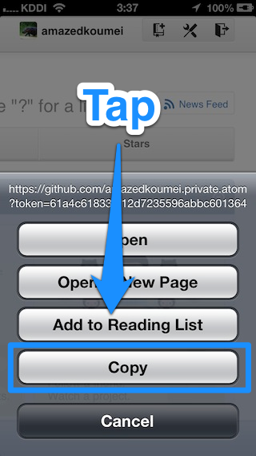
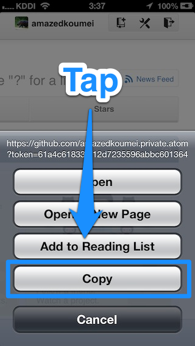
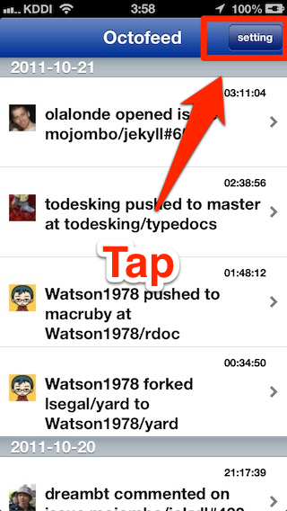
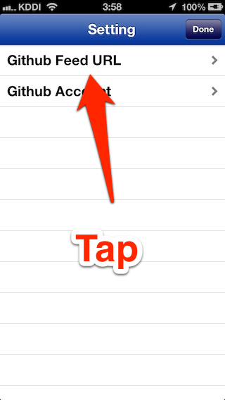
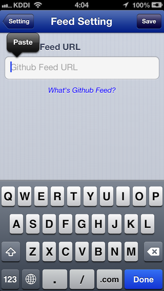
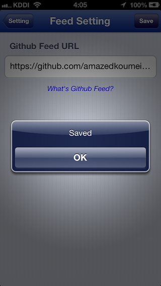
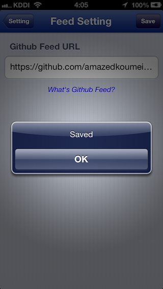

What’s Github feed?
Github feed is RSS feed notice you your following person’s action and your watching repository’s like below
-
your following person’s
- push to
- create repository
- fork repository
- star repository
- create gist
- update gist
- and more
-
your watching repository’s
- push to
- pull request
- merge pull request
- close pull request
- comment pull request
- open issue
- comment issue
- edit wiki
- and more
How to set Github feed to Octofeed?
1. Open Safari and go to https://github.com/ and Sign in.
2. Pay attention “News Feed” button at the upper left.

3. Press long “News Feed” button and tap “Copy”.
 

4. Launch Octofeed and tap “setting” button.

5. Tap “Github Feed URL” menu.

6. Tap and log press text field and paste to.

7. Tap “save” button, then you finish setting.
 
